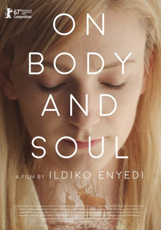

#8105 Körper und Seele
Alternativ: On Body and Soul (Englischer Titel)
Auszeichnungen: für 1 Oscars nominiert
 
 IMDB-Wertung: 7.6 / 10
IMDB-Wertung: 7.6 / 10  Metascore: 77
Metascore: 77 
Ein Schlachthaus in Budapest: Mária ist neu hier – und als Qualitätskontrolleurin wird sie nicht sonderlich nett empfangen, zumal sie autistisch ist und sich deswegen besonders stark daran hält, was in ihrem Handbuch steht. Fast alle Kollegen meiden Mária, aber immerhin mit dem Finanzchef Endre der halbseitig gelähmt ist, versteht sie sich. Die beiden bauen ein besonderes Verhältnis zueinander auf, das sogar noch viel außergewöhnlicher ist, als es zunächst den Anschein hat. Nachdem ein für die Rinderzüchtung vorgesehenes Präparat geklaut wird, das die Tierlibido steigert, werden alle Angestellten des Schlachthauses zu einem psychologischen Test verpflichtet. Das Ergebnis der Untersuchung belegt die spezielle Verbindung von Mária und Endre: Wie es aussieht, haben die zwei Kollegen jede Nacht beide denselben Traum. Sie träumen, dass sie Hirsche sind, die einander in einem verschneiten Wald treffen...
Jahr: 2017
Dauer: 116 Minuten
FSK: 12
Land: Ungarn Studio: Alamode FilmTonspuren:
Untertitel:
Auflösung: 1080p (1920x808) Größe: 4106 MB
Genre: Drama, Fantasy, Liebe
Regisseur: Ildikó Enyedi
Drehbuch: Ildikó Enyedi
Soundtrack: Adam Balazs
Darsteller:
- Alexandra Borbély als Mária
- Nóra Rainer-Micsinyei als Sári
- Géza Morcsányi als Endre
- Zoltán Schneider als Jenö
- Ervin Nagy als Sanyi
- Tamás Jordán als Mária's doctor
- Zsuzsa Járó als Zsuzsa
- Réka Tenki als Klára
- Júlia Nyakó als Rózsi
- Itala Békés als Zsóka
- Éva Bata als Köves Jutka
- Zsófi Bódi als Piroska
- Hanna Csata als Kissing girl
- István Dankó als Salesman (cd store)
- Annamária Fodor als Saleswoman (telephone store)
- Attila Fritz als Peti
- Ábel Galambos als Tomi
- Góliát als Deer
- Barnabás Horkay als János, police officer
- István Kolos als Surgeon
- Gusztáv Molnár als Waiter
- Pál Mácsai als Investigator
- Márton Patkós als Kissing boy
- Picur als Doe
- Vivien Rujder als Saleswoman (cd store)
- Rozi Székely als Teri
- Vince Zrínyi Gál als Béla
Datei: X:\2017(G-M)\Körper und Seele (2017, FSK12, 1920x808).mkv seit 24.01.2018
Festplatte: HD 2017(A-Z)-2018(A-F)
 Es gibt insgesamt 148 Filme in der Gruppe '2017(G-M)'
Es gibt insgesamt 148 Filme in der Gruppe '2017(G-M)'